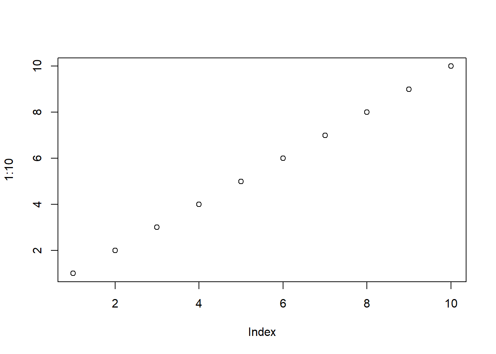
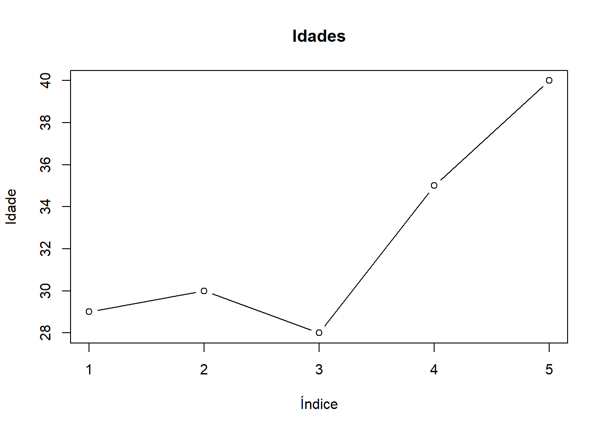
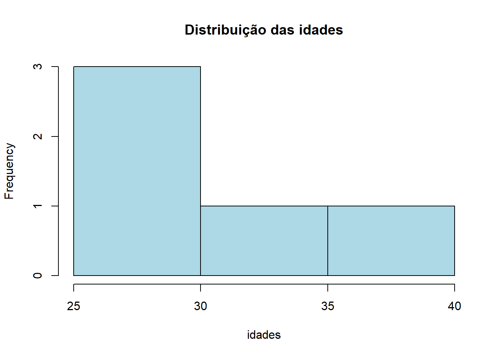

Código
vetor <- c(1, 2, 3, 4, 5)
vetor <- 1:10
vetor[] [1] 1 2 3 4 5 6 7 8 9 10

Estatística e Probabilidade
Prof. Ben Dêivide (DEFIM/CAP/UFSJ)
A linguagem R é um ambiente de programação amplamente utilizado para análise estatística e manipulação de dados. Sua importância está relacionada à capacidade de trabalhar com diferentes estruturas de dados e realizar cálculos de forma eficiente.
Este relatório tem como objetivo apresentar os conceitos iniciais da linguagem R e do ambiente RStudio, destacando sua estrutura, funcionamento e aplicação prática.
Apresentar os conceitos básicos da linguagem R e sua utilização no ambiente RStudio.
A linguagem R é baseada em três princípios fundamentais:
Os vetores são a estrutura mais básica do R e armazenam dados do mesmo tipo.
vetor <- c(1, 2, 3, 4, 5)
vetor <- 1:10
vetor[] [1] 1 2 3 4 5 6 7 8 9 10lista <- list(
nome = "Vitor Theodoro",
idade = 29,
curso = "Engenharia de Telecomunicações"
)
lista $ nome[1] "Vitor Theodoro"lista $ curso[1] "Engenharia de Telecomunicações"lista $ idade[1] 29# <- atribuição
x <- 10
# x == 10 comparação
x == 10[1] TRUEArquivos do R
.RData → salva objetos
.Rhistory → salva comandos
numeros <- c(2, 4, 6, 8)
mean(numeros)[1] 5sum(numeros)[1] 20A visualização de dados é uma etapa importante na análise estatística, pois permite interpretar padrões, tendências e comportamentos dos dados de forma mais intuitiva.
# Gráfico básico
plot(1:10)
# Criando vetor de exemplo
idades <- c(29, 30, 28, 35, 40)
plot(idades, type = "b",
main = "Idades",
xlab = "Índice",
ylab = "Idade")
# Histograma
hist(idades,
main = "Distribuição das idades",
col = "lightblue")
Durante a prática, foi possível observar que o R apresenta grande eficiência na manipulação de dados e execução de cálculos estatísticos.
A utilização de vetores e dataframes facilita a organização das informações, enquanto as funções prontas permitem rapidez nas análises.
Além disso, o ambiente RStudio contribui para melhor visualização e controle dos objetos criados.
A linguagem R demonstrou ser uma ferramenta poderosa para análise de dados, apresentando uma estrutura baseada em objetos e funções.
Os conceitos abordados neste relatório, como vetores, dataframes e operadores, são essenciais para o desenvolvimento de análises mais avançadas.
Os objetivos propostos foram alcançados, permitindo uma compreensão inicial sólida da linguagem e de sua aplicação prática.
Referências
Vídeo aulas do professor da disciplina de Estatística e Probabilidade, Ben Dêivide.
Canal: (https://www.youtube.com/ bendeivide/videos?)